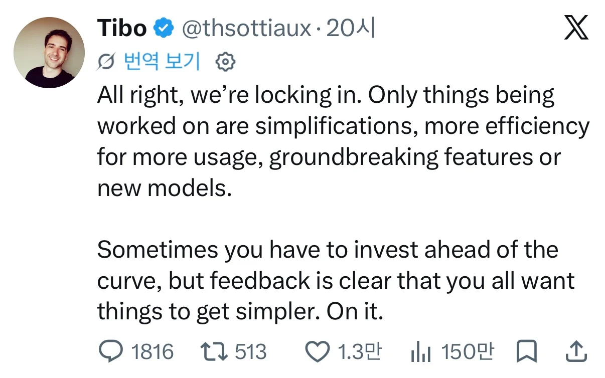
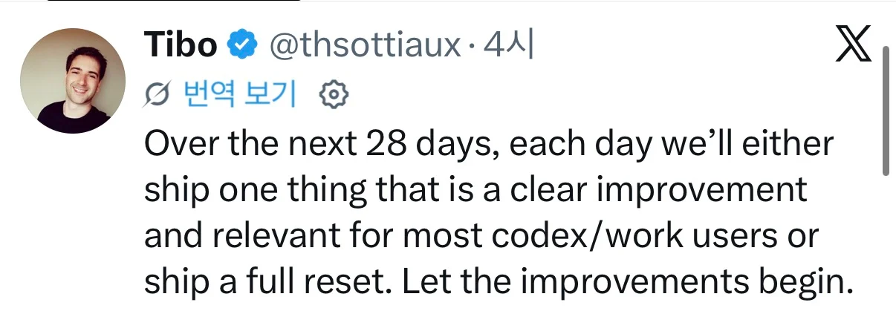

엔트로픽 Opus 5.5 Sonet5.5 출시, 구글 잼민이4.0 출시 앞둔상태에서 토큰계산식 바꿔서 사실상 토큰 반토막내는 무리수때문에
사용량 줄어들자, 거의 한달동안 매일 개선사항 업데이트 못하면 매일 토큰 리셋 이라는 도박수를 공략으로 걸었음
쫄리긴 한가봄
한줄요약 : 매일 업그레이드가 안되면 토큰리셋 매일 해줌 이라고 도박수 투척


엔트로픽 Opus 5.5 Sonet5.5 출시, 구글 잼민이4.0 출시 앞둔상태에서 토큰계산식 바꿔서 사실상 토큰 반토막내는 무리수때문에
사용량 줄어들자, 거의 한달동안 매일 개선사항 업데이트 못하면 매일 토큰 리셋 이라는 도박수를 공략으로 걸었음
쫄리긴 한가봄
한줄요약 : 매일 업그레이드가 안되면 토큰리셋 매일 해줌 이라고 도박수 투척
???: 일도없고 시원허다~
버튼 위치 바꾸기, 색상 바꾸기 이지랄하고 개선했음 이럴듯
메이플식 개선 해놓고 개선이라고하면 양붕이들이 tibo고 뭐고 T머시기였던것으로 조리돌림할듯 ㅋㅋㅋ
패치노트 : 코드 최적화(사실 아무것도 안바꿨지만 니들이 뭘 할 수 있지)
구글 제미나이 4.0은 빼자. 솔직히 기대 1도 안 된다...
뭐 벤치만 올리고 개쩔어요 이러면서 근들갑 인거는 사실인데, 한번만 믿어보자.
그거 구라로 알고있는데?
Argon은 나도 프론티어 경쟁 못할거같은데 아직 울트라는 기대됨
솔직히 라데온 급 암레발 이라고봄

그래도 구글이 사용량 제일 많이 주지않나.
난 기대해본당
맨날 쳐틀리고 동문서답하고 진심 기대가 하나도 안됨 ㅋㅋㅋ
우리가 같이 호들갑 떨어줘야 얘네들이 긴장감을 가질듯
저렇게해도 토큰 개 조루
아니 시팔 work왜 동작을 안하는데
이것부터 고쳐내라
3일동안 팡팡쓴다 다뒤졌다
씨발새끼가 이거였네. 어쩐지 워크가 안돌드라. 개새끼가 토큰 초기화 시켜 주니까 워크를 아예 안돌려 버리노 애미 없는 새끼가.
난 엔트로픽 믿을게
말이 업그레이드지 개선했답시고 넣어놓고 역효과터져서 너프된게 옆회사 오푸스 4.6때도 도게자까지 박았구만
시스템 프롬프트에 '한 것과 하지 않은 것을 똑바로 사용자에게 보고해라'라고 넣으면 구라 안치고 제대로 보고하기만 하는 좋은 프롬프트같아도 저러면 말끝마다 온갖 하지 않은것을 지어내서 되려 병신같아짐
전 : '사과 구입해' => '사과를 구입했습니다'
후 : '사과 구입해' => '사과를 구입했습니다. 배는 구입하지 않았습니다'
걍 제발 버전 같으면 유사한 동작을 하게 해줘 ㅅㅂ
부재한사항들 끌고와서 넣는거 좆같아 진짜
인터뷰할때 끌고와서 예외케이스 짚어주는건 좋은데
이 시발 주석이랑 작업내용에서 코끼리를 잊어라도 아니고 자꾸 튀어나오는거 좆같아
와 컴게에 내가 캡쳐해서 올린거 고대로 퍼왓네
ㄷㄷㄷ
뒷구멍 따였네
지금 밀린거 못따라 잡고 있어서 발등에 불떨어짐ㅋㅋㅋㅋ
티보에게 다들 환호할때 나는 이런일이 일어날거 같았다..
비밀리에 개발중인 AGI도 욕 한마디 했을 것 같은데;